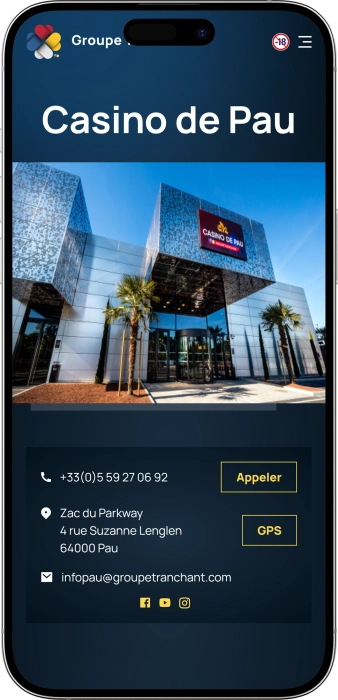

Offre de bienvenue exclusive de
Offre de bienvenue exclusive de
Casino de Pau — jeux, jackpots, concerts et soirée complète
Top casinos
Détails du bonus
Casino
Bonus
Note
Tours gratuits
Plus d'infos
Obtenir
Avantages
-
Jackpots fréquents et gros gains possibles
-
Promotions régulières sur les machines à sous
-
Jeux électroniques avec mises accessibles
-
Tables traditionnelles avec croupiers en soirée
-
Large choix de slots et terminaux
-
Soirées, concerts et animations récurrentes
-
Accès pratique et parking gratuit
- Le Casino de Pau séduit par un mélange d’adrénaline et de confort. On y trouve facilement un rythme de jeu adapté, du divertissement rapide aux sessions plus stratégiques.
Casino de Pau App


À propos Casino de Pau
Le casino se distingue par une mise en avant claire des gains et une dynamique de jackpots qui attire les joueurs. L’expérience est renforcée par des espaces conviviaux et des soirées qui prolongent le plaisir au-delà du jeu.
- Jackpots hebdo : jusqu’à 13 000 €+
- Gains progressifs : 3 niveaux de jackpots
- Gains dès 100 € visibles régulièrement
Le Casino de Pau est un lieu moderne pensé pour vivre une vraie sortie et changer d’air. L’espace est conçu pour circuler facilement entre les zones de jeu et les moments de pause. On y retrouve machines à sous, jeux électroniques et tables classiques, ce qui permet d’adapter son rythme.
L’ambiance mise sur le confort, la lumière et des éléments visuels qui renforcent l’esprit “spectacle”. En journée, l’atmosphère est plus calme et propice à des sessions détendues. Le soir, le casino devient plus animé et se prête davantage aux expériences conviviales. Des animations régulières viennent enrichir le programme et éviter la routine. Le personnel accompagne les visiteurs et facilite la prise en main pour ceux qui découvrent le lieu. Les règles d’accès restent simples et contribuent à l’image soignée de l’établissement. C’est une adresse où jeu, service et divertissement se complètent naturellement.
Casino de Pau : ambiance, jeux et soirée complète
Le Casino de Pau propose une atmosphère moderne, ample et pensée “grand divertissement” : lumières, écrans et espaces bien découpés créent un cadre vivant sans être étouffant. La circulation est fluide et l’on ressent une organisation qui garde le lieu confortable, même lorsqu’il y a du monde. On peut y venir pour une session rapide ou pour une longue soirée, en alternant jeu et pauses. Le style général évoque un établissement actuel, orienté expérience et convivialité.
Les horaires sont conçus pour s’adapter aux sorties de journée comme aux nuits plus tardives. L’ouverture est quotidienne, avec des fins de soirée prolongées en fin de semaine. Cela convient particulièrement aux visiteurs qui veulent prendre leur temps, dîner, jouer et prolonger l’ambiance. Les veilles de jours fériés peuvent également offrir une amplitude horaire renforcée, pratique pour les périodes festives.
Côté bars et espaces lounge, le casino encourage les pauses et le rythme “à la carte”. On trouve des zones pour boire un verre et reprendre le jeu sans rupture. Le Royal Lounge se démarque par une énergie plus nocturne, idéale pour transformer une simple visite en véritable sortie. Cette logique fait du casino un point de rendez-vous, pas seulement une salle de jeux.
Pour ceux qui aiment les rendez-vous culturels, la dimension événementielle apporte une vraie valeur ajoutée. Le Royal Pau Events fonctionne comme un espace modulable capable d’accueillir concerts, soirées thématiques et événements privés. Grâce à la scène et à l’équipement technique, les formats restent variés et renouvelés. Le casino gagne ainsi une identité “spectacle” en plus de l’offre de jeu.
Il n’y a généralement pas d’hôtel intégré, mais l’expérience se combine facilement avec un hébergement à proximité, selon le budget et le confort recherchés. Beaucoup de visiteurs adoptent un format “soirée” ou “week-end”, en alternant casino, restauration et découvertes locales. Cette flexibilité plaît à ceux qui veulent tout organiser sans dépendre d’un seul lieu d’hébergement. Le Casino de Pau devient alors une pièce centrale d’un programme plus large.
Enfin, les offres et mécaniques de fidélisation renforcent l’intérêt des retours réguliers. L’accent se met souvent sur des avantages cumulés, des propositions personnalisées et des animations saisonnières qui dynamisent les visites. Les joueurs sensibles aux offres sur machines, aux jeux électroniques ou aux soirées trouvent des raisons de revenir. L’ensemble donne une expérience cohérente, où jeu, ambiance et service se répondent.
Service et paiements au Casino de Pau : équipe, moyens de règlement et gains
Au Casino de Pau, l’équipe fonctionne généralement avec une logique d’accompagnement : orientation dans les espaces, explications simples sur les terminaux, et aide pour les démarches courantes. Le soir, lorsque les tables et les animations créent plus d’affluence, le personnel devient plus présent pour garder un service fluide et un accès bien contrôlé. Le ton reste en principe calme et courtois, ce qui rassure les nouveaux visiteurs. Pour les questions spécifiques, on vous dirige vers l’accueil ou vers un responsable.
Côté langues, le français est la base la plus confortable, et l’on rencontre souvent un niveau d’anglais utile pour les demandes simples, surtout lorsque la fréquentation est plus internationale. Pour les informations sur des sujets précis (paiements, événements, réservations), des phrases claires et directes facilitent les échanges. Les demandes liées aux soirées privées, aux concerts ou aux banquets passent généralement par un interlocuteur dédié. Cela rend l’organisation plus simple et plus fiable.
La monnaie utilisée est l’euro, et l’ensemble des opérations est pensé autour de ce cadre. Les paiements par carte bancaire sont habituellement bien intégrés, tout comme l’usage d’espèces pour certaines opérations de caisse. On retrouve fréquemment les principaux réseaux et la possibilité de régler sans contact, pratique pour les transactions rapides. Selon les procédures internes, certains modes peuvent avoir des seuils minimums ou des conditions d’utilisation.
La question des distributeurs et du change concerne surtout les visiteurs venant de l’étranger ou ceux qui préfèrent gérer leur budget en espèces. Le plus pratique est souvent de prévoir des euros en amont, afin d’éviter les recherches tardives pendant la soirée. Une préparation simple — montant, limite de dépenses, mode de paiement — aide à garder un contrôle confortable. Cela rend l’expérience plus sereine et plus responsable.
Le retrait d’un gain se fait généralement à la caisse, avec une procédure classique de vérification d’identité. Pour des montants importants, des contrôles complémentaires peuvent exister : pièce d’identité, formalités, et choix du mode de paiement. Selon le montant, le règlement peut se faire en espèces dans certaines limites, ou via des solutions de paiement adaptées aux sommes plus élevées. Le respect des règles de sécurité et de conformité reste prioritaire.
Enfin, la fiscalité dépend du statut du joueur et des obligations liées à sa résidence fiscale. Le casino applique les règles en vigueur pour la remise des gains, tandis que les démarches de déclaration peuvent relever du joueur selon sa situation. Pour des gains significatifs, il peut être utile de vérifier les obligations auprès d’un professionnel compétent. Dans tous les cas, l’identification et la traçabilité restent des points essentiels lors d’un paiement de gain.
Règles d’accès au Casino de Pau : tenue, entrée et conseils pratiques
Visiter le Casino de Pau implique de respecter des règles simples qui garantissent une ambiance sereine et sécurisée. L’accès aux salles de jeu est réservé aux majeurs, et une pièce d’identité valide est indispensable. La tenue correcte est une règle importante : l’établissement privilégie un esprit “sortie” plutôt qu’un look sportif. À l’entrée, on peut vous demander de faciliter l’identification, notamment en retirant certains accessoires. Le casino applique en général un refus d’accès en cas de comportement inapproprié, d’agressivité ou d’ivresse excessive. La photo et la vidéo peuvent être limitées dans les zones de jeu afin de préserver la confidentialité. Aux heures d’affluence, le contrôle est plus strict pour maintenir la qualité d’accueil. Il est utile de choisir son horaire selon l’objectif : tables, ambiance du soir, ou session plus calme. Pour les automobilistes, la proximité d’un stationnement et la facilité d’accès sont des atouts majeurs. Sans voiture, le taxi reste souvent la solution la plus confortable, surtout tard dans la nuit.
Tenue (dress-code)
- • Style soigné “casual/soirée” recommandé
- • Tenues de sport et de plage déconseillées
- • Chaussures et apparence générales propres exigées
Conditions d’entrée
- • Réservé aux 18+
- • Pièce d’identité valide obligatoire
- • Refus possible en cas de non-respect des règles
Interdictions et limites
- • Comportements agressifs ou perturbateurs interdits
- • Restrictions possibles sur photo/vidéo en zones de jeu
- • Toute manipulation des équipements est proscrite
Parking et accès
- • Accès pratique depuis les grands axes
- • Arrivée en voiture facilitée en soirée
- • Taxi conseillé pour les retours tardifs
Programme de fidélité du Casino de Pau : niveaux, avantages et bonus
Le programme de fidélité du Casino de Pau s’adresse à ceux qui reviennent régulièrement et souhaitent bénéficier d’avantages concrets. Le principe est clair : plus vous jouez et plus vous participez à la vie du casino, plus les offres deviennent personnalisées. La carte de membre relie l’expérience de jeu à des privilèges, des invitations et des conditions avantageuses. Pour beaucoup, c’est une manière de rendre chaque visite plus riche et plus confortable. Les points cumulés se transforment ensuite en bonus ou en cadeaux, selon les règles en place. Des offres spécifiques apparaissent souvent autour des fêtes, des périodes saisonnières et des anniversaires. Les joueurs de machines à sous et de jeux électroniques profitent particulièrement de ce système, car la régularité y est simple à maintenir. Les jeux de table peuvent aussi être concernés, selon les modalités internes. L’inscription est rapide et nécessite généralement une vérification d’identité. Une fois la carte active, les offres et les invitations deviennent plus visibles et plus ciblées. Les niveaux supérieurs apportent davantage de différenciation dans l’accueil et l’accès aux événements. Au final, la fidélité se transforme en parcours de privilèges progressif.
Conditions d’inscription
- • Avoir 18+ et une pièce d’identité valide
- • Remplir un formulaire (coordonnées pour recevoir les offres)
- • Accepter les règles d’attribution et d’utilisation des points
- • Récupérer la carte immédiatement après création
Niveaux et comment les atteindre
- • Classic — dès l’inscription ; base 1 point pour 10 € de jeu
- • Silver — fréquentation active ; bonus de points +10%
- • Gold — visites régulières ; bonus +25% et invitations prioritaires
- • Platinum — forte activité ; bonus +40% et offres très personnalisées
Bonus et privilèges
- • Bonus de bienvenue : crédits/bonus 10–30 € sur machines lors des premières visites
- • Cadeau d’anniversaire : bonus 10–50 € ou invitation avec attention
- • Conversion de points : 100 points = 5 € en bonus/bon d’achat (selon conditions)
- • Invitations événements : accès concerts/soirées, valeur 15–40 € environ
- • Jours “membre” : points multipliés x2 sur des créneaux définis
- • Avantages service : accueil plus rapide, facilités de réservation selon disponibilité
- • Avantages bar/restauration : coupons et offres 5–15% selon périodes
Fournisseurs de logiciels
Divertissement et jeux au Casino de Pau
Bonus et offres spéciales au Casino de Pau : promos, gains et temps forts
En dehors de la fidélité, le Casino de Pau anime souvent ses salles avec des promotions de jeu et des offres liées au divertissement. Les machines à sous et les jeux électroniques sont fréquemment au cœur de ces actions, car ils se prêtent bien aux mécaniques thématiques. Selon les périodes, on retrouve des créneaux “happy hours”, des mini-compétitions et des rendez-vous du soir qui donnent un aspect événementiel au jeu. L’intérêt est de proposer des avantages simples à comprendre, même pour ceux qui découvrent le casino. Les formats du type “jouez et recevez”, “participez à un tirage”, ou “visez le jackpot” restent accessibles et motivants. Pendant les fêtes et les saisons fortes, les soirées à thème s’accompagnent souvent de musique et d’animations. Une autre dimension concerne les offres bar et restauration, qui renforcent l’idée d’une sortie complète. Par moments, certains jeux peuvent bénéficier de conditions promotionnelles ou de chances supplémentaires sur des jackpots progressifs. Pour les noctambules, les sessions tardives apportent une ambiance plus intense et plus festive. Les jackpots progressifs entretiennent aussi une dynamique de gain qui rend chaque partie potentiellement marquante. Au final, l’expérience combine jeu, événement et confort. C’est cette combinaison qui rend les offres particulièrement attractives.
Jackpots progressifs sur machines
- • Exemple de gains : 500 € à 13 000 €+ selon le niveau et l’accumulation
- • Idée : plus le pot grossit, plus le gain potentiel augmente
“Happy Hours” machines à sous
- • Exemple : crédits bonus 5–20 € sous condition sur un créneau défini
- • Idée : booster une session en début de soirée
Soirées “tournoi” sur terminaux
- • Exemple de dotation : 300–1 500 € répartis selon le classement
- • Idée : compétition sur score/points pendant une durée limitée
Tirages spéciaux (périodes festives)
- • Exemple de lots : bons 50–200 €, cadeaux, invitations événements
- • Idée : récompenser la participation sur des dates clés
Offres “seconde chance” sur jeux ciblés
- • Exemple : tentatives supplémentaires / spins équivalents 5–15 €
- • Idée : prolonger le plaisir sans complexité
Formules “jeu + bar”
- • Exemple : avantage boisson 5–12 € lors d’une visite du soir
- • Idée : relier jeu et détente de façon simple
Soirées à thème saisonnières
- • Exemple : valeur combinée entrée + bonus 15–40 €
- • Idée : unir musique, ambiance et dynamique de jeu
Jeux populaires au Casino de Pau : machines, tables et sensations
Le Casino de Pau propose un mélange de formats qui permet à chacun de trouver son style : rapide, détendu ou plus stratégique. L’intérêt du public se porte souvent sur les machines à sous, car elles sont simples d’accès, rythmées et riches en thèmes. Les joueurs appréciant le confort numérique choisissent volontiers les terminaux électroniques, qui permettent de commencer vite et de garder un tempo sans attente. Pour ceux qui recherchent l’âme du casino, les tables avec croupiers en soirée apportent une dimension plus “spectacle”. La roulette attire par sa cadence et ses choix intuitifs, tandis que le blackjack séduit les profils qui aiment la décision et la discipline. Les formats poker ajoutent un aspect social, avec une tension plus “compétitive” et une place pour la compétence. Beaucoup de visiteurs alternent plusieurs jeux dans la même soirée afin de renouveler les sensations. L’expérience devient alors un parcours de divertissement plutôt qu’une seule session uniforme. Les débutants se tournent souvent vers machines et versions électroniques, plus faciles à prendre en main. Les joueurs confirmés privilégient fréquemment les tables pour l’ambiance et la profondeur. Cet équilibre rend le casino attractif pour des publics très variés.
- • Machines à sous (slots) — grand choix de thèmes, démarrage rapide, bonus et jackpots progressifs
- • Roulette (électronique/traditionnelle) — mises sur numéros et sections, rythme fort, idéale en sessions courtes
- • Blackjack (électronique/traditionnel) — jeu avec stratégie, décisions clés et gestion de bankroll
- • Ultimate Hold’em Poker (poker contre la maison) — sensation “poker”, logique de mains et dynamique casino
- • Vidéo poker — mélange de mécanique machine et de choix inspirés du poker
- • Postes électroniques — interface claire, tempo rapide, bon pour découvrir les règles
Mises au Casino de Pau : minima et maxima par jeu
La fourchette de mises compte énormément : certains recherchent une entrée très accessible, d’autres veulent pouvoir jouer plus fort. Au Casino de Pau, on peut généralement commencer bas sur les machines et les postes électroniques, puis monter en intensité sur les tables. Cette flexibilité permet d’adapter le niveau de risque à l’humeur et au budget de la soirée. Le tableau ci-dessous donne un repère pratique des mises minimales et maximales les plus courantes.
| Jeu | Mise minimale | Mise maximale |
|---|---|---|
| Machines à sous (slots) | 0,01 € | 2 € |
| Roulette électronique | 0,50 € | 50 € |
| Blackjack électronique | 1 € | 50 € |
| Roulette (table) | 2 € | 500 € |
| Blackjack (table) | 2 € | 250 € |
| Ultimate Hold’em Poker | 2 € | 250 € |
| Vidéo poker | 0,10 € | 10 € |
Animations au Casino de Pau : concerts, soirées et ambiance nocturne
Le Casino de Pau ne se limite pas au jeu : c’est aussi un lieu où l’on vient chercher une vraie ambiance et des temps forts réguliers. Sa force réside dans la programmation : soirées à thème, animations, rendez-vous musicaux et moments événementiels donnent l’impression qu’une visite peut toujours réserver une surprise. Le Royal Pau Events apporte une dimension “scène” grâce à un espace pensé pour accueillir concerts, événements privés et formats corporate. Avec une configuration modulable et une technique adaptée, l’endroit peut proposer des expériences très différentes selon le calendrier.
La soirée se construit souvent selon un enchaînement naturel : jeu, pause au bar, puis musique et convivialité. Le Royal Lounge facilite ce passage vers une énergie plus nocturne, idéale pour prolonger après une session de jeu. Le casino devient alors un point de sortie complet, particulièrement apprécié les fins de semaine. On y reste plus longtemps, car l’ambiance évolue sans nécessiter de changer de lieu.
Les animations récurrentes peuvent inclure des soirées saisonnières, des dates spéciales et des programmations musicales qui reviennent régulièrement. Cette régularité crée une habitude : on sait qu’il y aura une ambiance, un programme et un vrai “moment”. Le divertissement s’intègre bien au jeu : on alterne, on respire, on reprend. C’est cette alternance qui rend l’expérience plus fluide et plus riche.
Toutes les animations
- • Royal Pau Events (espace concerts/événements) — concerts, soirées privées, thèmes, événements d’entreprise
- • Soirées à thème — saisons, fêtes, scénarios spéciaux et ambiance renforcée
- • Programmations musicales — sets et rendez-vous orientés “soirée du week-end”
- • Royal Lounge (bar & ambiance) — cocktails, convivialité, prolongation de la nuit
- • Animations de jeu — mini-tournois, soirées promo, tirages intégrés au calendrier
Bars, restaurant et détente au Casino de Pau : une sortie complète
Au Casino de Pau, la détente est pensée pour alterner facilement jeu et pauses agréables. Le fait d’avoir une restauration sur place rend la visite plus cohérente : on peut déjeuner ou dîner sans quitter l’univers du casino. Les horaires orientés “midi + soir” conviennent autant aux visiteurs de journée qu’à ceux qui viennent pour une grande soirée. Cette organisation aide à garder un bon rythme, en revenant au jeu avec une énergie renouvelée.
Les espaces bar apportent de la souplesse : une pause courte peut suffire pour relancer la soirée. Le Royal Lounge se distingue par un esprit plus nocturne, où la détente devient une partie de l’expérience. On s’y retrouve plus facilement entre amis, on échange, on profite d’une ambiance plus “sortie”. Ce format est particulièrement recherché en fin de semaine, lorsque l’on veut prolonger la nuit.
Concernant l’hébergement, le casino ne propose généralement pas d’hôtel intégré, mais l’expérience se combine très bien avec des hôtels proches. C’est pratique pour un séjour “week-end” : on choisit un niveau de confort adapté et on utilise le casino comme point central. Au final, la sortie se construit avec des éléments simples : jeu, repas, bar, animations et retour confortable à l’hôtel.
Tous les espaces détente
- • Restaurant des machines — déjeuners/dîners, cuisine de saison, pause sans quitter le lieu
- • Bar des espaces de jeu — boissons rapides, pauses courtes entre sessions
- • Royal Lounge — lounge du soir, cocktails, atmosphère plus festive
- • Zones de pause — moments de respiration entre jeu et animations
- • Hôtels à proximité — choix flexible pour une soirée ou un week-end
FAQ
Oui, des dispositifs existent pour le jeu responsable et l’auto-limitation. Le personnel peut orienter vers la démarche adaptée.
En général non : l’accès se fait librement si les règles sont respectées et si vous avez une pièce d’identité. La réservation concerne surtout les événements, concerts et créneaux restaurant très demandés.
Les infrastructures modernes sont généralement adaptées, avec des accès et des circulations pratiques. Les événements prévoient aussi des conditions d’accueil cohérentes.